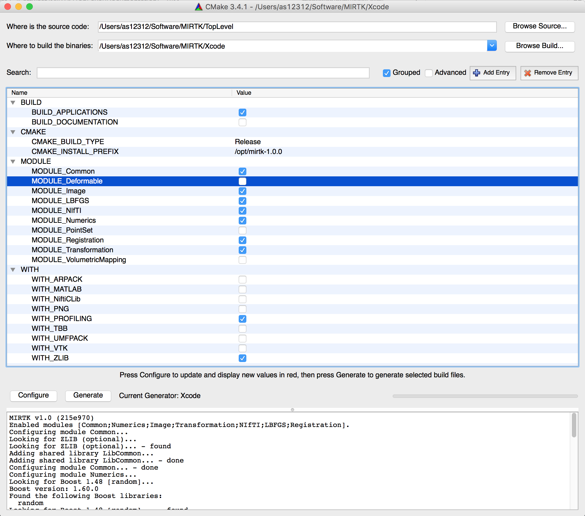

Installation¶
Requirements¶
For the generation of build environment specific build configuration files, the Cross-platform Make tool named CMake is needed. The minimum required version for Linux and OS X is 2.8.12, while version 3.4 or newer is needed on Windows.
For the compilation of the MIRTK source code, a C++ compiler with support for the C++11 standard is required. On Windows, the minimum required Visual Studio compiler version is 18.0. A compatible compiler is shipped with Visual Studio 2013 or newer.
To execute the MIRTK commands, a Python installation is required. Note that Python has to be installed before configuring the MIRTK build using CMake.
Dependencies¶
The MIRTK source code makes use of the following third-party libraries:
| Third-party library | Version | Included as | Required by module(s) | Optionally used by |
|---|---|---|---|---|
| Intel TBB | any | System | No module | All modules |
| Boost | 1.48 | System or Git submodule | Numerics, Point Set, Transformation | |
| Eigen | 3.0 | System or Git submodule | Numerics, Volumetric Mapping | |
| ARPACK / UMFPACK | any | System | No module | Numerics |
| VTK | 6.0 | System | Point Set, Deformable, Volumetric Mapping | Common, Image, Registration |
| libpng | any | System | No module | Image |
| NiftiCLib | any | System or Source code | No module | I/O |
| libLBFGS | any | Source code | No module | I/O |
Only libraries marked as “Included as” System alone which are required by the modules to be build must be installed separately before building the MIRTK libraries and command-line tools. Boost and Eigen are a minimum requirement to build MIRTK. The needed source files of these header-only libraries can optionally be copied into the MIRTK ThirdParty/ directory as described in the download instructions. The source code of the NiftiCLib and libLBFGS libraries are included in the basic download package and need not be installed. The WITH_NiftiCLib build option can be used, however, to force the use of an existing NiftiCLib installation. See build configuration steps below.
The intra-module dependencies are as follows. When a module is enabled, all modules required by this module are automatically enabled as well.
| Module | Requires module(s) | Optionally uses module(s) |
|---|---|---|
| Common | No other module | |
| Numerics | Common | |
| Image | Common, Numerics | |
| I/O | Image | |
| Transformation | Common, Numerics, Image | |
| Point Set | Common, Numerics, Image, Transformation | |
| Registration | Common, Numerics, Image, Transformation | Point Set, Deformable |
| Deformable | Common, Numerics, Image, Transformation, Point Set | |
| Volumetric Mapping | Common, Numerics, Image, Point Set |
Note
Notice that the I/O module is required only by the Applications which read/write images or point sets.
For a complete list of module dependencies, see the BasisProject.cmake file and in some cases also the config/Depends.cmake file if present in the respective module directory.
Configuration¶
CMake GUI Example¶
After obtaining a copy of the MIRTK source files, generate the build configuration files for your build tool of choice using CMake. We recommend the use of the CMake GUI with the “Grouped” checkbox enabled. Advanced options should normally not be required to be modified.
An example screenshot of a CMake configuration is shown below.
Step-by-step¶
Set source code and build directory paths.
For the build directory path, a subdirectory within the MIRTK source directory named “Build” is recommended.
Click “Configure” to initialize the build system.
CMake will ask for the build tool for which configuration files are to be generated. For Linux, the Makefile (i.e., GNU Make), Ninja, or CodeBlocks/Qt Creator generators are recommended. On OS X, the Xcode generator should be selected.
Enable/disable MIRTK Modules to be build and features to be enabled.
Which modules are enabled is specified by the MODULE family of options. Optional library features are enabled by forcing the use of the respective external libraries required by the implementation of the feature using the WITH family of options. After the change of an option or other CMake variable, re-configure the build system by clicking on “Configure” again until no further changes are made and the “Generate” button is enabled.
Option/Variable Description BUILD_APPLICATIONS Build command-line tools of enabled modules. BUILD_DOCUMENTATION Configure build of online documentation (“doc” target). BUILD_DOCUMENTATION_SOURCES (Re-)generate .rst source files of auto-generated pages. BUILD_TESTING Build the regression tests. (advanced, unused) CMAKE_BUILD_TYPE Build configuration (e.g. “Release” for optimized code). CMAKE_INSTALL_PREFIX Installation directory (default on Linux and OS X is /opt/mirtk-<version>). PYTHON_EXECUTABLE Python executable used for execution of Python scripts. WITH_ARPACK Enable eigendecomposition of sparse matrices. Required for spectral surface matching. WITH_FLANN Use the Fast Library for Approximate Nearest Neighbors to locate points. WITH_MATLAB Enable output of matrices to .mat files and use of MATLAB functions. WITH_NiftiCLib Force use of existing system installation of NiftiCLib. WITH_PNG Enable writing of 2D images in PNG file format. WITH_PROFILING Enable profiling of code execution to find runtime bottlenecks. WITH_TBB Enable multi-threaded execution using Intel Threading Building Blocks. (recommended) WITH_UMFPACK Automatically enabled when WITH_ARPACK is ON. WITH_VTK Enable processing of VTK files. Automatically enabled when PointSet module is enabled. WITH_ZLIB Enable reading/writing of compressed files using zlib. (recommended)
Generate build tool configuration files.
When done, click the “Generate” button to write the configuration files for the build tool selected in step 2.
Note
Enabling a module may require additional external libraries or add further WITH options. The location of required external libraries is specified by the DEPENDS family of variables. These are marked as advanced and hence hidden from the default view when an installation of the external library was found automatically. To see which external libraries the MIRTK will be linked with, enable the “Advanced” checkbox at the top of the CMake GUI.
Dependency not found¶
When a build dependency such as VTK, for example, was not found, a DEPENDS variable becomes visible in the GUI (i.e. not marked as advanced) which must be set to either the installation prefix of the dependency or the directory containing a CMake package configuration file (e.g., VTKConfig.cmake). See the following screenshot for an example where VTK was not found automatically and the path to the VTKConfig.cmake file in the VTK build directory was set manually after the error was reported.

Build¶
After the configuration files for the chosen build tool were generated by CMake, open the corresponding project file in case of an IDE such as Xcode or a Terminal window in case of the GNU Make or Ninja build tools to build the MIRTK.
The following assumes the build directory to be located at,
MIRTK_BINARY_DIR=$MIRTK_SOURCE_DIR/Build
cd $MIRTK_BINARY_DIR
where MIRTK_SOURCE_DIR is the top-level directory containing the MIRTK source files (see Download command).
Using GNU Make, run:
make -j 8
Using Ninja, run:
ninja
When BUILD_DOCUMENTATION was set to ON during the build configuration, the documentation files can be build (before installation!) using the “doc” target.
Using GNU Make, run:
make doc
Using Ninja, run:
ninja doc
Installation¶
After the successful build of the MIRTK, the software can be installed by building the “install” target.
Using GNU Make, run:
make install
Using Ninja, run:
ninja install
To enable the convenient use of the Applications, it is recommended to permanently add the $MIRTK_ROOT/bin directory to the PATH environment variable in the shell configuration file (e.g., $HOME/.bashrc or $HOME/.bash_profile), where MIRTK_ROOT is the directory chosen as CMAKE_INSTALL_PREFIX above.
The MIRTK installation further includes a Bash completions script which when sourced in your Bash configuration file, enables auto-completion of available MIRTK commands for the mirtk command. To enable the MIRTK Bash completions, add the following lines to $HOME/.bashrc (Linux) or $HOME/.bash_profile (OS X):
[ ! -f "$MIRTK_ROOT/share/completion/bash/mirtk" ] ||
source "$MIRTK_ROOT/share/completion/bash/mirtk"
[ ! -f "$MIRTK_ROOT/share/mirtk/completion/bash/mirtk" ] ||
source "$MIRTK_ROOT/share/mirtk/completion/bash/mirtk"
The Bash completions are then available when a new Terminal window is opened.
Note
When the CMAKE_INSTALL_PREFIX contains a directory named “mirtk” (or “mirtk-<version>”) as in case of the default installation prefix “/opt/mirtk-<version>”, the library files and MIRTK commands are installed into $CMAKE_INSTALL_PREFIX/lib. But when the installation path does not include the project name, as in case of “/usr/local”, for example, these files are copied into the directory $CMAKE_INSTALL_PREFIX/lib/mirtk. The same applies to other installation subdirectories such as “share” and “doc”. Only the executable files are always copied to $CMAKE_INSTALL_PREFIX/bin.